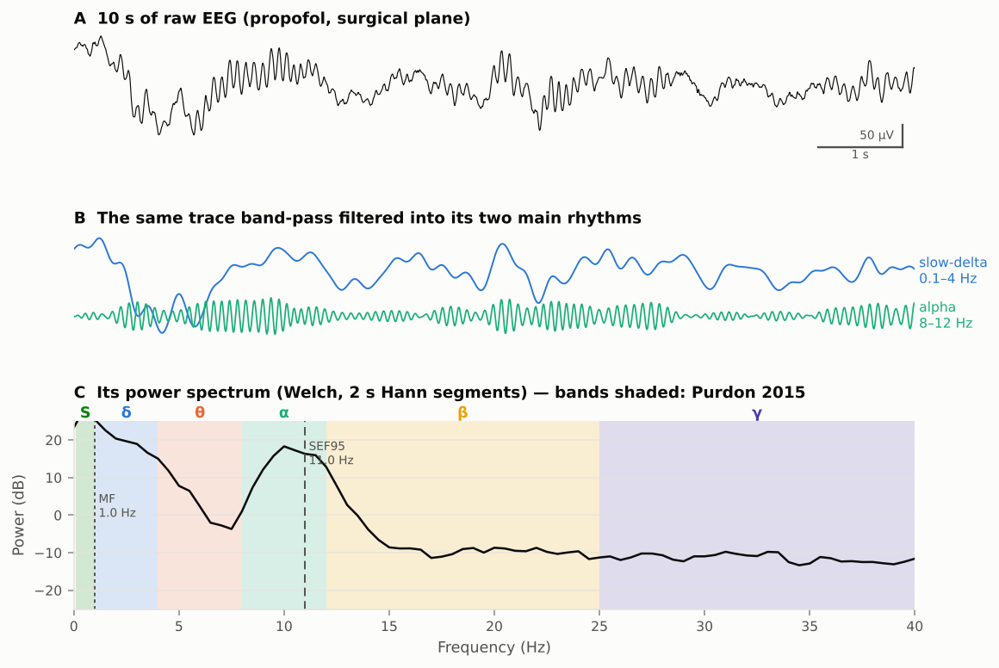
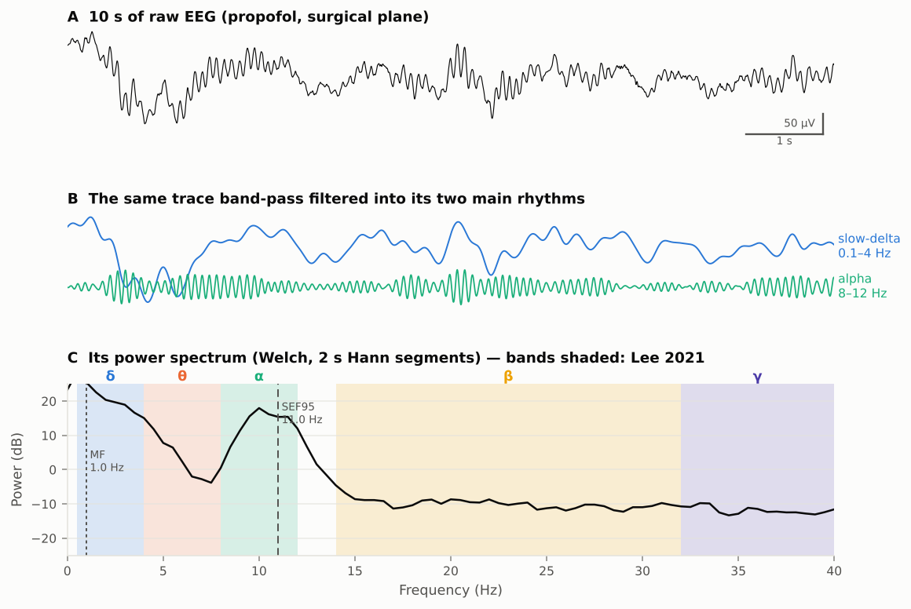
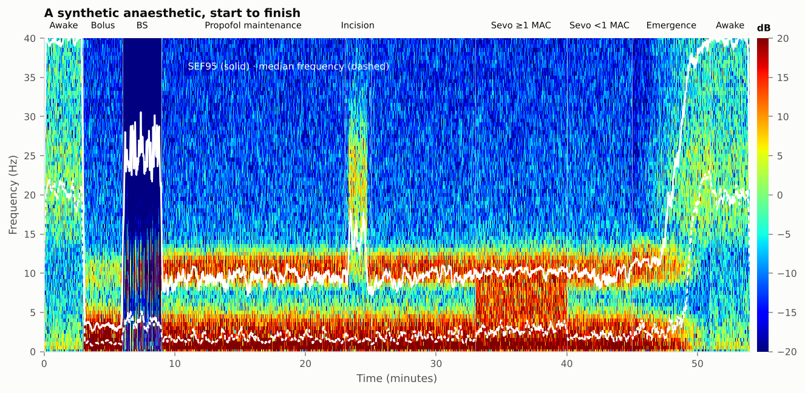

Where the EEG comes from and how it is analysed
By the end of this page you should be able to
- Describe what the EEG measures and where the signal is generated. Delphi FD1 Delphi FD2
- Explain why the brain is worth monitoring during anaesthesia. Delphi FD3
- Name the frequency bands and explain power, decibels and frontal alpha. Delphi PV8
- Read a power spectrum and a density spectral array (DSA). Delphi PR3
- Relate EEG signatures to their clinical meaning. Delphi FD13
Why monitor the brain?
Every hypnotic we give acts on the brain, but standard monitoring tracks the heart, the lungs and the anaesthetic delivered, not its effect on the brain. End-tidal concentration tells you what is in the alveoli. A TCI pump tells you what a model predicts. Neither tells you how this patient's brain is responding.
The aims of EEG monitoring have changed over time. In the past the main aim was to prevent awareness. More recently, attention has turned to avoiding unnecessarily deep anaesthesia, especially in older and vulnerable patients[3]. In practice the EEG helps with three questions: is this patient too light, about right, or too deep[4]?
What the EEG actually measures
Neurons communicate with action potentials, and synaptic activity produces small extracellular currents. In the cortex, pyramidal neurons line up in parallel with their dendrites pointing towards the surface. That geometry makes them act like an antenna: when many of them are active in synchrony, their fields add up into potentials large enough to be recorded through skull and scalp[1].
Deeper structures such as the thalamus produce much smaller signals at the scalp, because field strength falls with the square of the distance from the source. Cortex, thalamus and the brainstem arousal centres are densely interconnected, though, so the scalp EEG still reflects what these deeper circuits are doing to the cortex[1].
Anaesthetics do not simply switch the cortex off. They induce large, organised oscillations that disrupt normal communication between brain regions. Under anaesthesia these oscillations can be 5 to 20 times larger in amplitude than the awake EEG, which is why they are easy to see[1].
Commercial anaesthesia monitors record from a few electrodes on the forehead, so what you see is mostly frontal cortex[2]. This matters for propofol and the volatile agents. In the awake brain, alpha rhythm sits over the back of the head. On loss of consciousness, alpha power shifts forward to the frontal lobes and becomes highly coherent, a change called anteriorisation. On emergence it moves back[1]. Frontal alpha on the monitor therefore suggests an anaesthetised brain, not a relaxed awake one.
Frequency bands
EEG rhythms are named by frequency in hertz (cycles per second). The names are conventions, and different sources put the boundaries in slightly different places. Use the switch at the top of the page to compare the two schemes used on this site.
| Band | Range (Hz) | Typical anaesthetic meaning |
|---|---|---|
| Slow | < 1 | Propofol and volatile unconsciousness, deep dexmedetomidine, the N₂O transition |
| Delta | 1–4 | Usually moves together with slow waves ("slow-delta") |
| Theta | 5–8 | Fills in when volatile agents reach about 1 MAC or more |
| Alpha | 9–12 | Coherent frontal alpha of GABAergic unconsciousness. Dexmedetomidine spindles also fall around here |
| Beta | 13–25 | Awake, sedation, paradoxical excitation, arousal |
| Gamma | 26–80 | Awake activity, ketamine (about 25–32 Hz), muscle artefact |
| Band | Range (Hz) | Typical anaesthetic meaning |
|---|---|---|
| Delta | < 4 | Includes what Purdon calls slow (< 1 Hz). The slowing seen with GABAergic anaesthesia |
| Theta | 4–8 | Volatile agents at about 1 MAC or more. Lee et al. also discuss theta changes in chronic pain |
| Alpha | 8–12 | Thalamocortical alpha. Its power falls with age and is a candidate marker of the "vulnerable brain" |
| Beta | 14–32 | Awake, sedation, arousal |
| Gamma | > 32 | Awake activity, muscle artefact |
Band edges are conventions. The physiology does not change when the boundary moves. In practice, though, a band-power number on a monitor, a research paper or the companion script only means something if you know which edges were used. GE Entropy, for example, uses its own ranges: 0.8–32 Hz for state entropy and 0.8–47 Hz for response entropy[38]. When you compare numbers, check the definitions first.
Amplitude, power and decibels
The raw EEG is a voltage, measured in microvolts (µV), that swings around zero over time. To compare rhythms we use power, which is amplitude squared (µV²). Power is always positive, and it is the quantity spectral analysis produces[2].
Power in the EEG varies over several orders of magnitude between frequencies, so it is shown on a logarithmic scale in decibels: dB = 10 × log₁₀(power)[1]. Two rules of thumb are enough for the bedside:
- +10 dB means 10 times the power, which is about 3 times the amplitude.
- +3 dB means roughly double the power.
"Frequency-band power" is the power summed across one band. When a paper says "frontal alpha power fell by 3 dB", the alpha rhythm on the forehead has about halved in power[25].
The spectrum
A stretch of EEG can be broken down into the sine waves that make it up. This is Fourier analysis, usually done with a fast Fourier transform (FFT). The result is a power spectrum: frequency on the horizontal axis, power on the vertical. It shows at a glance which rhythms are present in a stretch of signal, which is very hard to judge by eye from the raw trace[1,2].


Median frequency and spectral edge frequency
Two single numbers summarise where the power sits in a spectrum:
- Median frequency (MF): half the power lies below this frequency and half above.
- Spectral edge frequency (SEF95): 95% of the power lies below this frequency[1].
Most anaesthetics slow the EEG, moving power to lower frequencies, so MF and SEF95 fall as the patient goes deeper[2]. Both numbers depend on the frequency range they are calculated over. Purdon used 0.1–30 Hz, while the figures here and the companion script use 0.5–45 Hz. What a given shift means also depends on the drug. Ketamine moves power up the spectrum, and dexmedetomidine produces very low values in a patient you can wake by talking to them (Module 3).
The spectrogram, or density spectral array
A single spectrum describes a few seconds. To follow an anaesthetic, the spectrum is recalculated every second or two and the results are placed side by side. In the density spectral array (DSA), time runs along the horizontal axis, frequency up the vertical axis, and power is shown as colour, from cold blue (low) to hot red (high)[1,2]. The older 3-D "compressed spectral array" draws the same data as a landscape. Purdon et al. call the 2-D view simply the spectrogram, and this site uses "DSA" and "spectrogram" interchangeably.

Some devices run time horizontally and others vertically. Colour scales also differ between devices. Before reading a DSA in theatre, find out which axis is time on your monitor and what the colours mean[2]. SedLine shows left and right hemispheres as mirrored DSAs.
Putting the pieces together
The raw trace, the spectrum and the DSA are three views of the same signal. The raw trace is closest to reality and shows burst suppression and artefacts best. The spectrum shows what is happening now. The DSA shows the trend and how quickly things are changing. Neither the spectrum nor the DSA replaces the raw trace[1,4]. Module 2 is about reading the raw trace.
Advanced How good is the spectrum?
Any spectrum estimated from a short, noisy window involves trade-offs. The FFT-based methods used by monitors and by the companion script (Welch's method) average several windowed segments to reduce noise. Purdon's group uses multitaper spectral estimation, which uses several orthogonal tapers on the same data and gives nearly optimal statistical properties: high resolution with low variance. This makes drug signatures sharper, although no commercial monitor displayed multitaper spectrograms at the time of that review[1,42]. See Under the hood for window length and frequency resolution.